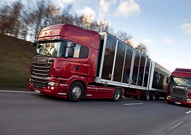

Проще и эффективней доставлять крупные партии товаров на значительные расстояния, минуя промежуточные этапы, с помощью автомобильных грузоперевозок. Использование для этого 20-тонных фур обходится гораздо дешевле транспортировки грузов по воздуху. При этом скорость доставки фургонами значительно выше, чем при использовании железнодорожного или водного транспорта, к тому же продукция в таком случае доставляется со склада отправителя до дверей получателя. Из нашей статьи вы узнаете, что представляют собой грузоперевозки фурами в 20 тонн, каковы их особенности, какие требования предъявляются к грузу, транспортным средствам и водителям.
В то время, когда еще не существовало автомобильных дорог, не были изобретены тяжелые грузовики, а значит, отсутствовали заказы на перевозку грузов, термин фура уже широко применялся. Тогда так называли большие телеги, на которых перевозили различную поклажу. Зачастую у предпринимателей, занимающихся торговлей, строительством или курьерской доставкой, случаются ситуации, требующие транспортировки определенного количества грузов на значительное расстояние и в сжатые сроки. Если объем груза больше того, что может поместиться в обычную ГАЗель, то ее использование становится невозможным. Значит, для совершения подобных грузоперевозок оптимально подойдут вместительные фуры. Подобным образом обычно организуется транспортировка сборных грузов.
Среди преимуществ использования для грузоперевозок фур отметим возможность одновременно транспортировать значительные объемы грузов (до 20 тонн). Параметры фур зависят от компании- производителя и могут весьма существенно различаться. Вместительность автофургонов может составлять от 82 до 120 м3. Внушительные размеры позволяют перевозить с их помощью очень большие партии товаров, имеющих нестандартные и негабаритные параметры. Для выполнения погрузочных и разгрузочных работ на сегодняшний день от грузчиков не требуется применение больших физических усилий. В настоящее время для проведения сложных операций с грузами привлекаются специальные устройства – манипуляторы, ускоряющие и облегчающие процесс грузоперевозок.
С учетом быстро растущего спроса на транспортировку большого количества и объема грузов автомобильные перевозки по России в основном осуществляются с помощью большегрузных автомобилей. Грузоперевозки фурами до 20 тонн оказались одинаково удобными и эффективными как для доставки товаров в труднодоступные районы, так и для их перемещения в пределах крупных населенных пунктов. Автопарки компаний, специализирующихся на транспортном обслуживании, укомплектованы мощными тягачами и прицепами, грузоподъемность которых составляет 15–20 тонн, способных транспортировать самую различную продукцию. А наличие хорошей ремонтной базы и квалифицированных специалистов позволяет с помощью такого вида перевозок экономить средства клиентов.
 Стандартные грузовики, предназначенные для перевозки тяжелых товаров, являются седельными тягачами, дополненными прицепом. Общая длина тягача и прицепа может доходить до 13,6 метров, тентовый кузов может иметь ширину и высоту до 2,45 м. В результате не составляет проблем транспортировка грузов, объем которых достигает 82 м3. Хотя фуры обладают внушительными объемами и внешней громоздкостью, они отличаются достаточной маневренностью на дорогах и без проблем покрывают значительные расстояния по нашим дорогам. Стоит отметить, что специальным образом сконструированный кузов способен защитить перевозимые товары от осадков, дорожной пыли, ветра и т. п. Благодаря возможности растентовки погрузка осуществляется в короткие сроки с применением специальных погрузочных машин. Также легко выполняется разгрузка, независимо от вида складского помещения.
Поскольку перевозимые грузы могут отличаться свойствами, но все они должны быть доставлены по назначению в полной сохранности, в пути требуется создание соответствующих условий. А значит, автопарк должен быть укомплектован фурами разных типов. Но все-таки содержание значительного количества машин требует значительных расходов, включая оборудование места для стоянки техники, обслуживание и ремонт автомобилей, заработную плату специалистов. Подобные траты существенны даже для крупных перевозчиков. Поэтому стоит обратить внимание на возможность и выгоду аренды фуры в 20 тонн для грузоперевозок. Наиболее подходящими являются следующие виды прицепов и полуприцепов:
Тентовые. Пользуются наибольшим спросом у заказчиков, поскольку при сравнительно невысокой стоимости дают возможность размещения и безопасной транспортировки крупных партий товаров на любые расстояния. Благодаря возможности откинуть тент в любом месте загружать продукцию можно не только сзади, но и сбоку, и сверху кузова. В дороге тент надежно защищает груз от осадков и ультрафиолетового излучения.
Изотермические. Пользуются наибольшим спросом у Кузов таких фур грузоподъемностью 20 тонн во время грузоперевозок позволяет поддерживать заданную температуру. Самыми доступными для заказчиков являются грузовые автомобили, кузов которых изготовлен по принципу термоса. В нем на протяжении длительного времени сохраняется температура, которая была во время погрузки. Более совершенные модели оснащены кондиционерами. Они позволяют без проблем перевозить продукты и растения, поддерживая внутри кузова необходимую отрицательную или положительную температуру.
Рефрижераторные фуры. Пользуются наибольшим спросом у Кузов фуры-холодильника вмещает до 92 м3 груза, масса которого может достигать 22 тонн. Полуприцеп оборудован мощной системой охлаждения, позволяющей поддерживать внутри температуру до -25 °С. С помощью рефрижераторных фур осуществляются безопасные перевозки скоропортящихся грузов.
Автопоезд. Пользуются наибольшим спросом у Эта разновидность фур является большегрузным автомобилем, дополненным кузовом и прицепом. Грузоподъемность подобного автопоезда может доходить до 25 тонн, а вместимость – до 120 м3. Общая длина автосцепки не может быть более 20 м. Для комплектования автопоезда могут использоваться прицепы различных типов, как тентовые, так и изотермические или рефрижераторные.
Фура «Jumbo». Пользуются наибольшим спросом у Эта разновидность фур используется при необходимости транспортировки особо высоких грузов. Кузов транспортного средства отличается ступенчатым перепадом по высоте – от 2,5 м на уровне рамы до 3 м над колесами уменьшенного диаметра. Благодаря подобной конструкции в фуре можно перевозить до 125 м3 груза, масса которого может достигать 20 тонн.
Транспортировка с помощью попутных перевозок возможна только для небольших партий грузов. Это и составляет ее отличие от прочих видов грузоперевозок. В отличие от сборных перевозок, допускающих перемещение крупногабаритной продукции, попутные позволяют перевозить только небольшие по размеру предметы. С практической точки зрения этот вид грузоперевозок фурами в 20 тонн позволяет клиентам сэкономить. Зачастую арендовать индивидуальное транспортное средство при необходимости перевезти небольшую партию грузов экономически нецелесообразно. В этом случае использование возвращающейся пустой фуры может стать отличным ращением для предпринимателей, которым требуется перевезти мелкую продукцию. Владельцы фур, возвращающихся пустыми, без проблем готовы предоставить их для выполнения попутных перевозок. Клиент, которому необходима такого рода услуга, должен просто обратиться в транспортную компанию. Это позволит ему не заниматься самостоятельным поиском попутных машин, оформлением документации и отвечать за сохранность груза – все перечисленные задачи ложатся на фирму-перевозчика. Именно она будет контролировать все этапы транспортировки груза.